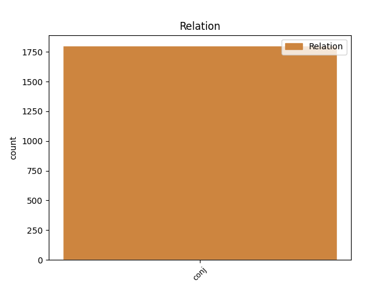
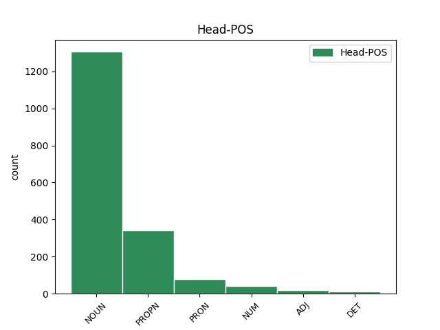
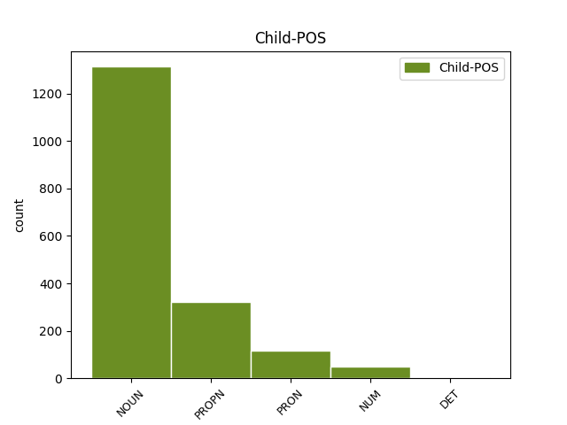

Distribution of features within this leaf



Agreement Rules sorted by frequency.
- When the dependent token is the conjunct(conj) of the head token, and the head token is NOUN and the dependent token is NOUN.
1 tuleekohan _ _ _ _ 0 _ _ _
2 nyt _ _ _ _ 0 _ _ _
3 kuus _ _ _ _ 0 _ _ _
4 taikka _ _ _ _ 0 _ _ _
5 seitsemän _ _ _ _ 0 _ _ _
6 vuotta _ _ _ _ 0 _ _ _
7 syyskuussa syyskuu NOUN N,Sg,Ine Case=Ine|Number=Sing 0 _ _ _
8 vai _ _ _ _ 0 _ _ _
9 elokuussa elokuu NOUN N,Sg,Ine Case=Ine|Number=Sing 7 conj _ _
10 kun _ _ _ _ 0 _ _ _
11 en _ _ _ _ 0 _ _ _
12 o _ _ _ _ 0 _ _ _
13 en _ _ _ _ 0 _ _ _
14 oo _ _ _ _ 0 _ _ _
15 tupakan _ _ _ _ 0 _ _ _
16 tupakkaa _ _ _ _ 0 _ _ _
17 polttannu _ _ _ _ 0 _ _ _
18 . _ _ _ _ 0 _ _ _
1 No _ _ _ _ 0 _ _ _
2 entäs _ _ _ _ 0 _ _ _
3 tämä _ _ _ _ 0 _ _ _
4 , _ _ _ _ 0 _ _ _
5 supisivat _ _ _ _ 0 _ _ _
6 Erkki erkki PROPN N,Prop,Sg,Nom Case=Nom|Number=Sing 0 _ _ _
7 Pohjanheimo _ _ _ _ 0 _ _ _
8 ja _ _ _ _ 0 _ _ _
9 kapellimestari _ _ _ _ 0 _ _ _
10 Olli olli PROPN N,Prop,Sg,Nom Case=Nom|Number=Sing 6 conj _ Alt=name
11 Ahvenlahti _ _ _ _ 0 _ _ _
12 . _ _ _ _ 0 _ _ _
1 tottahan _ _ _ _ 0 _ _ _
2 tuon _ _ _ _ 0 _ _ _
3 tiennöön _ _ _ _ 0 _ _ _
4 kuka _ _ _ _ 0 _ _ _
5 se se PRON Pron,Dem,Sg,Nom Case=Nom|Number=Sing|PronType=Dem 0 _ _ _
6 mikä _ _ _ _ 0 _ _ _
7 se se PRON Pron,Dem,Sg,Nom Case=Nom|Number=Sing|PronType=Dem 5 conj _ _
8 minkälainen _ _ _ _ 0 _ _ _
9 on _ _ _ _ 0 _ _ _
1 tuleekohan _ _ _ _ 0 _ _ _
2 nyt _ _ _ _ 0 _ _ _
3 kuus kuusi NUM Num,Card,Sg,Nom Case=Nom|Number=Sing|NumType=Card|Style=Coll 0 _ _ _
4 taikka _ _ _ _ 0 _ _ _
5 seitsemän seitsemän NUM Num,Card,Sg,Nom Case=Nom|Number=Sing|NumType=Card 3 conj _ _
6 vuotta _ _ _ _ 0 _ _ _
7 syyskuussa _ _ _ _ 0 _ _ _
8 vai _ _ _ _ 0 _ _ _
9 elokuussa _ _ _ _ 0 _ _ _
10 kun _ _ _ _ 0 _ _ _
11 en _ _ _ _ 0 _ _ _
12 o _ _ _ _ 0 _ _ _
13 en _ _ _ _ 0 _ _ _
14 oo _ _ _ _ 0 _ _ _
15 tupakan _ _ _ _ 0 _ _ _
16 tupakkaa _ _ _ _ 0 _ _ _
17 polttannu _ _ _ _ 0 _ _ _
18 . _ _ _ _ 0 _ _ _
1 Kenen _ _ _ _ 0 _ _ _
2 luottamusta _ _ _ _ 0 _ _ _
3 hallituksen _ _ _ _ 0 _ _ _
4 pitikään _ _ _ _ 0 _ _ _
5 nauttia _ _ _ _ 0 _ _ _
6 , _ _ _ _ 0 _ _ _
7 SAK:n sak PROPN N,Abbr,Prop,Sg,Gen Abbr=Yes|Case=Gen|Number=Sing 0 _ _ _
8 vai _ _ _ _ 0 _ _ _
9 eduskunnan eduskunta NOUN N,Sg,Gen Case=Gen|Number=Sing 7 conj _ _
10 ? _ _ _ _ 0 _ _ _
1 Poliitikot _ _ _ _ 0 _ _ _
2 eivät _ _ _ _ 0 _ _ _
3 petä _ _ _ _ 0 _ _ _
4 vain _ _ _ _ 0 _ _ _
5 kansaa kansa NOUN N,Sg,Par Case=Par|Number=Sing 0 _ _ _
6 , _ _ _ _ 0 _ _ _
7 vaan _ _ _ _ 0 _ _ _
8 myös _ _ _ _ 0 _ _ _
9 itseään itse PRON Pron,Refl,Sg,Par,Px3 Case=Par|Number=Sing|Person[psor]=3|Reflex=Yes 5 conj _ _
10 . _ _ _ _ 0 _ _ _
1 Kyllä _ _ _ _ 0 _ _ _
2 Moosekselta _ _ _ _ 0 _ _ _
3 irtosi _ _ _ _ 0 _ _ _
4 ohjeita _ _ _ _ 0 _ _ _
5 myös _ _ _ _ 0 _ _ _
6 pankeille pankki NOUN N,Pl,All Case=All|Number=Plur 0 _ _ _
7 ja _ _ _ _ 0 _ _ _
8 MTK:lle mtk PROPN N,Abbr,Prop,Sg,All Abbr=Yes|Case=All|Number=Sing 6 conj _ _
9 , _ _ _ _ 0 _ _ _
10 vai _ _ _ _ 0 _ _ _
11 mitä _ _ _ _ 0 _ _ _
12 sanotte _ _ _ _ 0 _ _ _
13 kolmannen _ _ _ _ 0 _ _ _
14 Mooseksen _ _ _ _ 0 _ _ _
15 kirjan _ _ _ _ 0 _ _ _
16 25. _ _ _ _ 0 _ _ _
17 luvusta _ _ _ _ 0 _ _ _
18 37. _ _ _ _ 0 _ _ _
19 jakeesta _ _ _ _ 0 _ _ _
20 ? _ _ _ _ 0 _ _ _
1 Tos _ _ _ _ 0 _ _ _
2 oli _ _ _ _ 0 _ _ _
3 Hesaris _ _ _ _ 0 _ _ _
4 nimittäi _ _ _ _ 0 _ _ _
5 savolaisista savolainen ADJ A,Pl,Ela Case=Ela|Number=Plur 0 _ _ _
6 juttuu _ _ _ _ 0 _ _ _
7 ja _ _ _ _ 0 _ _ _
8 savolaisesta _ _ _ _ 0 _ _ _
9 murrest murre NOUN N,Sg,Ela Case=Ela|Number=Sing|Style=Coll 5 conj _ _
1 Itse _ _ _ _ 0 _ _ _
2 asiassa _ _ _ _ 0 _ _ _
3 Jumalalla jumala PROPN N,Prop,Sg,Ade Case=Ade|Number=Sing 0 _ _ _
4 ei _ _ _ _ 0 _ _ _
5 ole _ _ _ _ 0 _ _ _
6 pipo _ _ _ _ 0 _ _ _
7 tiukalla _ _ _ _ 0 _ _ _
8 , _ _ _ _ 0 _ _ _
9 vaan _ _ _ _ 0 _ _ _
10 meillä me PRON Pron,Pers,Pl1,Ade Case=Ade|Number=Plur|Person=1|PronType=Prs 3 conj _ _
11 . _ _ _ _ 0 _ _ _
1 Minä _ _ _ _ 0 _ _ _
2 vaadin _ _ _ _ 0 _ _ _
3 hyvitystä _ _ _ _ 0 _ _ _
4 itselleni itse PRON Pron,Refl,Sg,All,PxSg1 Case=All|Number=Sing|Number[psor]=Sing|Person[psor]=1|Reflex=Yes 0 _ _ _
5 sekä _ _ _ _ 0 _ _ _
6 pojalle poika NOUN N,Sg,All Case=All|Number=Sing 4 conj _ _
7 , _ _ _ _ 0 _ _ _
8 jonka _ _ _ _ 0 _ _ _
9 sinä _ _ _ _ 0 _ _ _
10 otit _ _ _ _ 0 _ _ _
11 omaksesi _ _ _ _ 0 _ _ _
12 ja _ _ _ _ 0 _ _ _
13 heti _ _ _ _ 0 _ _ _
14 ensimmäisen _ _ _ _ 0 _ _ _
15 tilaisuuden _ _ _ _ 0 _ _ _
16 tullen _ _ _ _ 0 _ _ _
17 hylkäsit _ _ _ _ 0 _ _ _
18 . _ _ _ _ 0 _ _ _
1 En _ _ _ _ 0 _ _ _
2 minä minä PRON Pron,Pers,Sg1,Nom Case=Nom|Number=Sing|Person=1|PronType=Prs 0 _ _ _
3 sitä _ _ _ _ 0 _ _ _
4 ostanut _ _ _ _ 0 _ _ _
5 vaan _ _ _ _ 0 _ _ _
6 Anne anne PROPN N,Prop,Sg,Nom Case=Nom|Number=Sing 2 conj _ _
7 . _ _ _ _ 0 _ _ _
1 Nuorempana _ _ _ _ 0 _ _ _
2 olin _ _ _ _ 0 _ _ _
3 kysellyt _ _ _ _ 0 _ _ _
4 Herkolta _ _ _ _ 0 _ _ _
5 , _ _ _ _ 0 _ _ _
6 että _ _ _ _ 0 _ _ _
7 se _ _ _ _ 0 _ _ _
8 kuvailisi _ _ _ _ 0 _ _ _
9 sitä se DET Pron,Dem,Sg,Par Case=Par|Number=Sing|PronType=Dem 0 _ _ _
10 ja _ _ _ _ 0 _ _ _
11 sitä se PRON Pron,Dem,Sg,Par Case=Par|Number=Sing|PronType=Dem 9 conj _ _
12 neitosta _ _ _ _ 0 _ _ _
13 , _ _ _ _ 0 _ _ _
14 mutta _ _ _ _ 0 _ _ _
15 -- _ _ _ _ 0 _ _ _
1 samassa _ _ _ _ 0 _ _ _
2 yhtteyvessä _ _ _ _ 0 _ _ _
3 Tiina _ _ _ _ 0 _ _ _
4 sano _ _ _ _ 0 _ _ _
5 että _ _ _ _ 0 _ _ _
6 tilloo _ _ _ _ 0 _ _ _
7 hänellenni _ _ _ _ 0 _ _ _
8 semmonen semmoinen DET A,Dem,Sg,Nom Case=Nom|Number=Sing|PronType=Dem|Style=Coll 0 _ _ _
9 , _ _ _ _ 0 _ _ _
10 semmonen semmoinen DET A,Dem,Sg,Nom Case=Nom|Number=Sing|PronType=Dem|Style=Coll 8 conj _ Alt=DET
11 pakki _ _ _ _ 0 _ _ _
12 millä _ _ _ _ 0 _ _ _
13 nuotiolla _ _ _ _ 0 _ _ _
14 keitettää _ _ _ _ 0 _ _ _
15 . _ _ _ _ 0 _ _ _
1 Vuosi _ _ _ _ 0 _ _ _
2 ja _ _ _ _ 0 _ _ _
3 kirja kirja NOUN N,Sg,Nom Case=Nom|Number=Sing 0 _ _ _
4 tai _ _ _ _ 0 _ _ _
5 kaksikin kaksi NUM Num,Card,Sg,Nom,Kin Case=Nom|Clitic=Kin|Number=Sing|NumType=Card 3 conj _ _
6 -vauhtia _ _ _ _ 0 _ _ _
7 on _ _ _ _ 0 _ _ _
8 kirjoittanut _ _ _ _ 0 _ _ _
9 historiallista _ _ _ _ 0 _ _ _
10 rakkausviihdettä _ _ _ _ 0 _ _ _
11 myös _ _ _ _ 0 _ _ _
12 Ursula _ _ _ _ 0 _ _ _
13 Pohjolan-Pirhonen _ _ _ _ 0 _ _ _
14 . _ _ _ _ 0 _ _ _
1 Hänen _ _ _ _ 0 _ _ _
2 runonsa _ _ _ _ 0 _ _ _
3 levisivät _ _ _ _ 0 _ _ _
4 pääasiassa _ _ _ _ 0 _ _ _
5 kädestä _ _ _ _ 0 _ _ _
6 käteen _ _ _ _ 0 _ _ _
7 eikä _ _ _ _ 0 _ _ _
8 kukaan _ _ _ _ 0 _ _ _
9 inahtanutkaan _ _ _ _ 0 _ _ _
10 hänen hän DET Pron,Pers,Sg3,Gen Case=Gen|Number=Sing|Person=3|PronType=Prs 0 _ _ _
11 ja _ _ _ _ 0 _ _ _
12 hänen _ _ _ _ 0 _ _ _
13 perheensä perhe NOUN N,Sg,Gen,Px3 Case=Gen|Number=Sing|Person[psor]=3 10 conj _ _
14 kohtalosta _ _ _ _ 0 _ _ _
15 . _ _ _ _ 0 _ _ _
1 sen _ _ _ _ 0 _ _ _
2 hinta _ _ _ _ 0 _ _ _
3 riippuu _ _ _ _ 0 _ _ _
4 siitä _ _ _ _ 0 _ _ _
5 , _ _ _ _ 0 _ _ _
6 haluaako _ _ _ _ 0 _ _ _
7 reilata _ _ _ _ 0 _ _ _
8 yhden _ _ _ _ 0 _ _ _
9 , _ _ _ _ 0 _ _ _
10 kahden _ _ _ _ 0 _ _ _
11 , _ _ _ _ 0 _ _ _
12 kolmen kolme NUM Num,Card,Sg,Gen Case=Gen|Number=Sing|NumType=Card 0 _ _ _
13 vai _ _ _ _ 0 _ _ _
14 kaikkien kaikki PRON Pron,Qnt,Pl,Gen Case=Gen|Number=Plur|PronType=Ind 12 conj _ FTB-PronType=Qnt
15 vyöhykkeiden _ _ _ _ 0 _ _ _
16 alueella _ _ _ _ 0 _ _ _
17 . _ _ _ _ 0 _ _ _
1 Viinalitran _ _ _ _ 0 _ _ _
2 valmistukseen _ _ _ _ 0 _ _ _
3 kuluu _ _ _ _ 0 _ _ _
4 näet _ _ _ _ 0 _ _ _
5 kaksi kaksi NUM Num,Card,Sg,Nom Case=Nom|Number=Sing|NumType=Card 0 _ _ _
6 ja _ _ _ _ 0 _ _ _
7 puoli puoli NOUN N,Sg,Nom Case=Nom|Number=Sing 5 conj _ _
8 kiloa _ _ _ _ 0 _ _ _
9 viljaa _ _ _ _ 0 _ _ _
10 . _ _ _ _ 0 _ _ _
1 Lahdessa _ _ _ _ 0 _ _ _
2 käytiin _ _ _ _ 0 _ _ _
3 läpi _ _ _ _ 0 _ _ _
4 muutama muutama DET Pron,Qnt,Sg,Nom Case=Nom|Number=Sing|PronType=Ind 0 _ _ _
5 ravintola _ _ _ _ 0 _ _ _
6 , _ _ _ _ 0 _ _ _
7 Helsingissä _ _ _ _ 0 _ _ _
8 kaksitoista kaksitoista NUM Num,Card,Sg,Nom Case=Nom|Number=Sing|NumType=Card 4 conj _ _
9 . _ _ _ _ 0 _ _ _
Disagree Examples:
1 Kolmannes _ _ _ _ 0 _ _ _
2 väestä _ _ _ _ 0 _ _ _
3 on _ _ _ _ 0 _ _ _
4 Hämeenkyröstä hämeenkyrö PROPN N,Prop,Sg,Ela Case=Ela|Number=Sing 0 _ _ _
5 , _ _ _ _ 0 _ _ _
6 neljännes _ _ _ _ 0 _ _ _
7 Tampereelta tampere PROPN N,Prop,Sg,Abl Case=Abl|Number=Sing 4 conj _ _
8 ja _ _ _ _ 0 _ _ _
9 loputkin _ _ _ _ 0 _ _ _
10 lähikunnista _ _ _ _ 0 _ _ _
11 Ylöjärveltä _ _ _ _ 0 _ _ _
12 ja _ _ _ _ 0 _ _ _
13 Nokialta _ _ _ _ 0 _ _ _
14 . _ _ _ _ 0 _ _ _
1 Kolmannes _ _ _ _ 0 _ _ _
2 väestä _ _ _ _ 0 _ _ _
3 on _ _ _ _ 0 _ _ _
4 Hämeenkyröstä _ _ _ _ 0 _ _ _
5 , _ _ _ _ 0 _ _ _
6 neljännes _ _ _ _ 0 _ _ _
7 Tampereelta tampere PROPN N,Prop,Sg,Abl Case=Abl|Number=Sing 0 _ _ _
8 ja _ _ _ _ 0 _ _ _
9 loputkin _ _ _ _ 0 _ _ _
10 lähikunnista lähikunta NOUN N,Pl,Ela Case=Ela|Number=Plur 7 conj _ _
11 Ylöjärveltä _ _ _ _ 0 _ _ _
12 ja _ _ _ _ 0 _ _ _
13 Nokialta _ _ _ _ 0 _ _ _
14 . _ _ _ _ 0 _ _ _
1 Virkavallalla _ _ _ _ 0 _ _ _
2 riittäisi _ _ _ _ 0 _ _ _
3 töitä _ _ _ _ 0 _ _ _
4 varsinkin _ _ _ _ 0 _ _ _
5 iltapäivisin _ _ _ _ 0 _ _ _
6 , _ _ _ _ 0 _ _ _
7 jolloin _ _ _ _ 0 _ _ _
8 ryyppyporukka _ _ _ _ 0 _ _ _
9 alkaa _ _ _ _ 0 _ _ _
10 sammuilla _ _ _ _ 0 _ _ _
11 ja _ _ _ _ 0 _ _ _
12 vähän _ _ _ _ 0 _ _ _
13 sitä _ _ _ _ 0 _ _ _
14 ennen _ _ _ _ 0 _ _ _
15 kuseskella _ _ _ _ 0 _ _ _
16 , _ _ _ _ 0 _ _ _
17 räkiä _ _ _ _ 0 _ _ _
18 ja _ _ _ _ 0 _ _ _
19 oksennella _ _ _ _ 0 _ _ _
20 lähitalojen _ _ _ _ 0 _ _ _
21 porttikonkeihin porttikonki NOUN N,Pl,Ill Case=Ill|Number=Plur 0 _ _ _
22 ja _ _ _ _ 0 _ _ _
23 rappujen _ _ _ _ 0 _ _ _
24 edustalle edusta NOUN N,Sg,All Case=All|Number=Sing 21 conj _ _
25 . _ _ _ _ 0 _ _ _
1 sen _ _ _ _ 0 _ _ _
2 teko teko NOUN N,Sg,Nom Case=Nom|Number=Sing 0 _ _ _
3 ; _ _ _ _ 0 _ _ _
4 parasta _ _ _ _ 0 _ _ _
5 ( _ _ _ _ 0 _ _ _
6 teko _ _ _ _ 0 _ _ _
7 ) _ _ _ _ 0 _ _ _
8 aikaa aika NOUN N,Sg,Par Case=Par|Number=Sing 2 conj _ _
1 mut _ _ _ _ 0 _ _ _
2 eiks _ _ _ _ 0 _ _ _
3 tommoset _ _ _ _ 0 _ _ _
4 pitäs _ _ _ _ 0 _ _ _
5 sitte _ _ _ _ 0 _ _ _
6 näkyä _ _ _ _ 0 _ _ _
7 jossain _ _ _ _ 0 _ _ _
8 käytös käytös NOUN N,Sg,Nom Case=Nom|Number=Sing 0 _ _ _
9 tai _ _ _ _ 0 _ _ _
10 huolellisuusnumerossa huolellisuusnumero NOUN N,Sg,Ine Case=Ine|Number=Sing 8 conj _ _
11 . _ _ _ _ 0 _ _ _